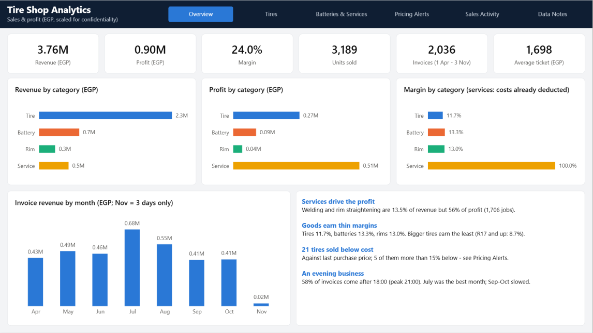
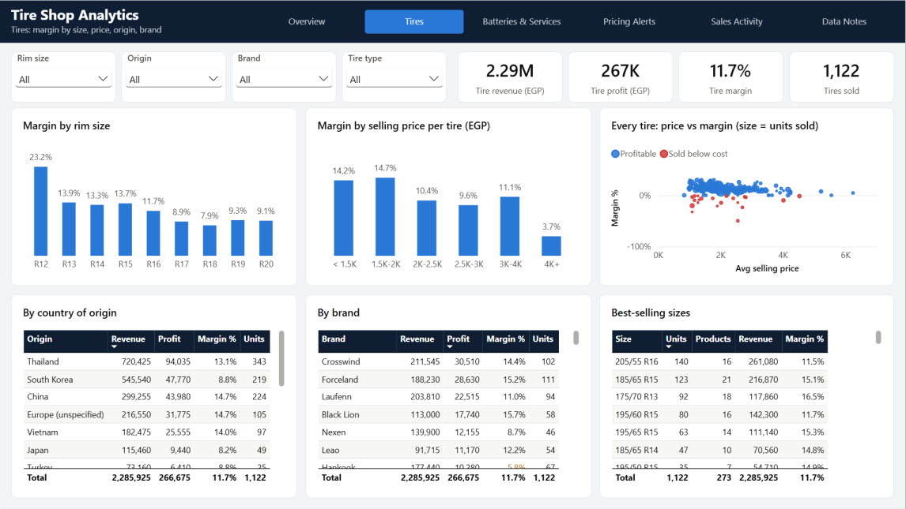
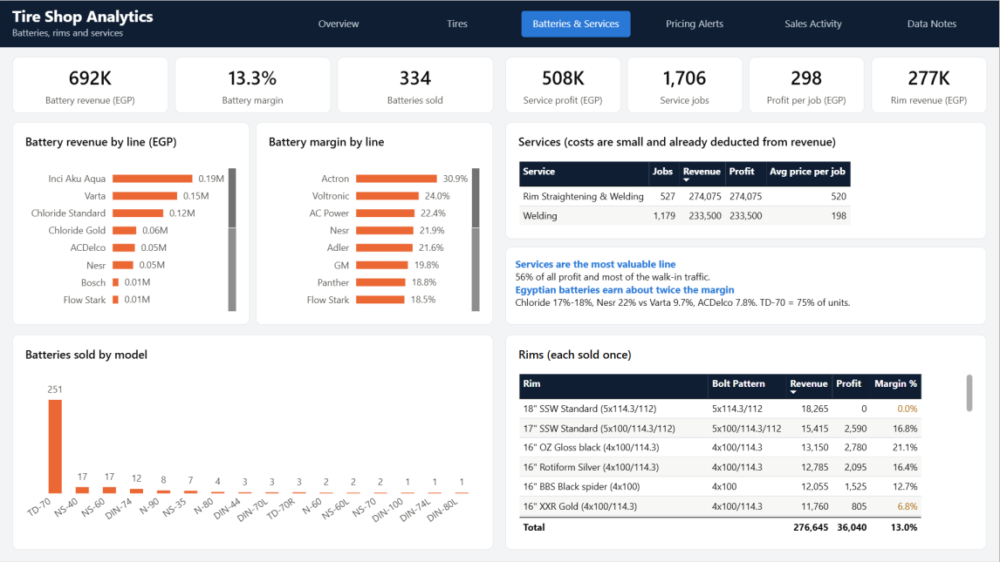
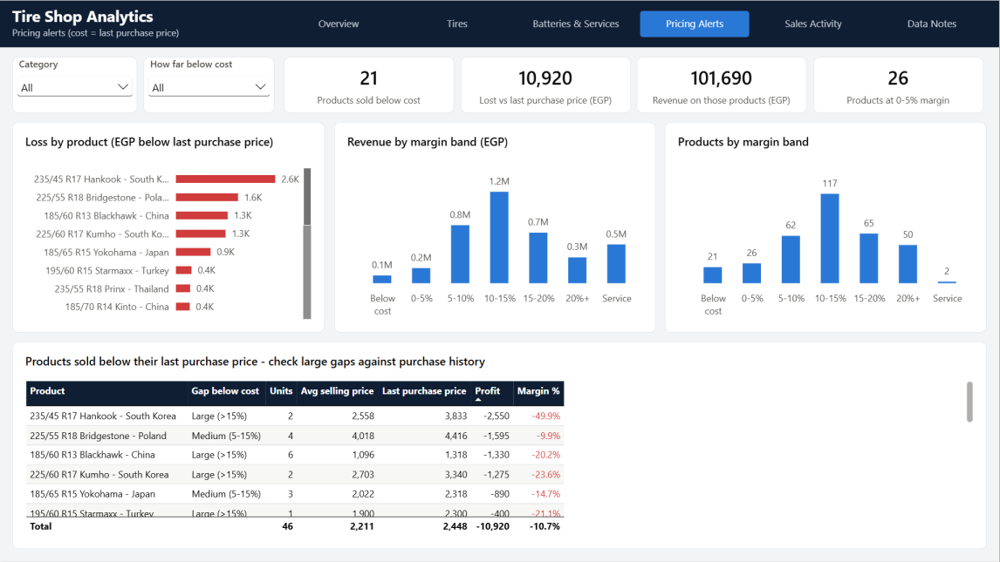
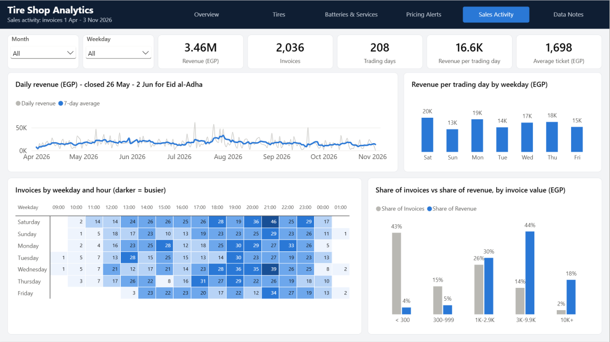
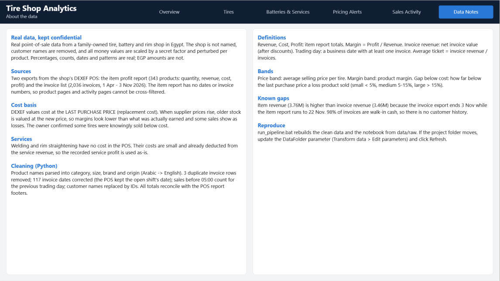

Power BI6 pagesReal data, scaled
Tire Shop Sales Dashboard
Page-by-page guide: what every visual shows, how to read it, what the numbers say, and what to do about it.
Real POS data from a tire, battery and rim shop in Egypt. Money values are scaled for
confidentiality; percentages, counts and patterns are real.
| 1. | Overview - the whole shop in one screen |
| 2. | Tires - margin by size, selling price, origin and brand |
| 3. | Batteries & Services - battery lines, service jobs and rims |
| 4. | Pricing Alerts - products sold below cost |
| 5. | Sales Activity - days, weekdays, hours, ticket sizes |
| 6. | Data Notes - sources, confidentiality and definitions |
| Source | What it contains | Used on |
|---|
| Item profit report | 343 products with quantity, revenue, cost and profit (all time). No dates. | Overview (top), Tires, Batteries & Services, Pricing Alerts |
| Invoice list | 2,036 invoices, 1 Apr - 3 Nov 2026, with date, time and amount. No products. | Overview (month chart), Sales Activity |
The two exports cannot be joined, so a product filter does not change invoice visuals and a month filter does not change product visuals.
1. Overview
The whole shop in one screen. Use it as a 30-second health check.

Overview page as it appears in Power BI Desktop.
Top row - six headline cards
| Card | What it means | Value |
|---|
| Revenue (EGP) | Sales value of all products and services (item report). | 3.76M |
| Profit (EGP) | Revenue minus cost (cost = last purchase price). | 903K |
| Margin | Profit / Revenue. | 24.0% |
| Units sold | Tires, batteries, rims and service jobs. | 3,189 |
| Invoices | Invoices in the invoice export. | 2,036 |
| Average ticket | Invoice revenue / invoices. | 1,698 |
Category charts and month chart
| Visual | How to read it | What it says |
|---|
| Revenue by category | Bar length = money taken in. | Tires bring 61% of revenue. |
| Profit by category | Same categories, profit instead of revenue. | Services make 56% of profit; tires 30%. |
| Margin by category | Profit as % of revenue. | Tires 11.7%, batteries 13.3%, rims 13.0%; services 100 % (costs already deducted). |
| Invoice revenue by month | One column per month (November = 3 days only). | July is the peak; September-October are the weakest full months. |
| Key findings box | Four plain-language conclusions. | Services drive profit; thin goods margins; below-cost tires; evening business. |
2. Tires
Which tire sizes, prices, origins and brands earn money. Filtered to tires only.

Tires page as it appears in Power BI Desktop.
Slicers, cards and charts
| Visual | How to read it | What it says |
|---|
| Slicers | Rim size, origin, brand, tire type - filter every visual on the page. | - |
| Cards | Tire revenue, profit, margin, tires sold. | 2.29M / 267K / 11.7% / 1,122 |
| Margin by rim size | One column per wheel size. | Big sizes earn the least: R17+ 8.7%. (R12 23.2%, R13 13.9%, R14 13.3%, R15 13.7%, R16 11.7%, R17 8.9%, R18 7.9%, R19 9.3%, R20 9.1%) |
| Margin by selling price | Tires grouped by average selling price. | Best volume band 1.5K-2K: 14.7%; 4K+: 3.7%. |
| Price vs margin | Each dot = one tire; dot size = tires sold; red = sold below cost. | The red dots under zero are the 21 below-cost products. |
| By country of origin | Revenue, highest first. | Thailand 13.1%; South Korea 8.8%; China 14.7%. |
| By brand | Profit, highest first. | Crosswind, Forceland, Laufenn lead; Hankook 5.8% (amber). |
| Best-selling sizes | Units, highest first. | 205/55 R16 (140), 185/65 R15 (123), 175/70 R13 (92) |
Use it for pricing and buying: pick an origin or a size in the slicers to see which brands pull the margin down.
3. Batteries & Services
Batteries, the welding / rim-straightening services, and rims.

Batteries & Services page as it appears in Power BI Desktop.
| Visual | How to read it | What it says |
|---|
| Cards | Battery revenue / margin / units; service profit, jobs, profit per job; rim revenue. | 692K / 13.3% / 334; 508K / 1,706 / 298; 277K |
| Battery revenue by line | Bars sorted by sales. | Inci Aku Aqua, Varta, Chloride Standard are the biggest lines. |
| Battery margin by line | Lines sorted by margin. | Egyptian brands lead: Nesr 22%, Chloride 18%; Varta 9.7%, ACDelco 7.8%. |
| Services table | Jobs, revenue, profit, average price per job. | Welding 1,179 jobs; rim straightening 527 jobs. |
| Batteries sold by model | Units per battery model. | TD-70 = 75% of batteries. |
| Rims table | Each rim with bolt pattern and margin. | 26 rims, each sold once; 13.0% margin. |
4. Pricing Alerts
Products sold below their last purchase price.

Pricing Alerts page as it appears in Power BI Desktop.
| Visual | How to read it | What it says |
|---|
| Slicers | Category; how far below cost (small < 5 %, medium 5-15 %, large > 15 %). | - |
| Cards | Products below cost / amount lost / their revenue / products at 0-5 %. | 21 / 10,920 / 101,690 / 26 |
| Loss by product | Red bars = EGP lost, biggest first. | 235/45 R17 Hankook - South Korea lost the most. |
| Margin bands | Revenue and number of products per margin level. | Below cost 21, 0-5% 26, 5-10% 62, 10-15% 117, 15-20% 65, 20%+ 50, Service 2 |
| Below-cost table | Each loss product with selling price vs last purchase price. | Example: 235/45 R17 Hankook at 2,558 vs 3,832 (-49.9%). |
How to act on it. Filter Large gaps and check purchase history: a supplier price jump after the sale is a cost effect, otherwise it was a pricing mistake. Going forward, update prices the day a more expensive batch arrives.
5. Sales Activity
When the shop sells, and how big the bills are (invoice list).

Sales Activity page as it appears in Power BI Desktop.
| Visual | How to read it | What it says |
|---|
| Cards | Revenue, invoices, trading days, revenue per day, average ticket. | 3.46M / 2,036 / 208 / 17K / 1,698 |
| Daily revenue | Grey = each day; blue = 7-day average. | Peak in July; gap = Eid al-Adha closure (26 May - 2 Jun). |
| Revenue per day by weekday | Average day for each weekday. | Saturday and Monday are best; Sunday weakest. |
| Heat map | Weekday x hour; darker = more invoices. | Busiest: Saturday 21:00; mornings before 12:00 = 3% of invoices. |
| Share of invoices vs revenue | Grey = % of invoices, blue = % of revenue, per bill size. | Bills of 3K+ are 16% of invoices but 62% of revenue. |
6. Data Notes
Reference page: sources, confidentiality, definitions and limitations.

Data Notes page as it appears in Power BI Desktop.
Explains that the data is real but confidential (scaled money values), how cost is measured, what the cleaning did, and the definitions of every band and measure.